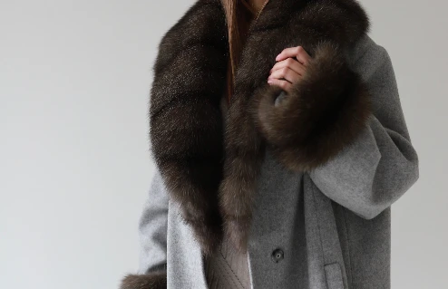

Пальто и куртки
Пальто или куртка с меховой отделкой
Кашемир или шерсть сочетают с меховой отделкой. В эту группу входят пальто, полупальто, куртки и жилеты.
- Мех отделки
- Соболь, норка, свакара, лисица, песец, рысь, шиншилла или куница
- Силуэт
- Подбирается по макету
- Техника
- Меховая отделка
- Подкладка
- Натуральный шёлк по умолчанию